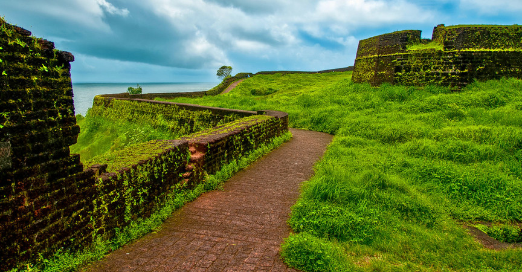

KASARGOD
Kasaragod or Kasargod is one of the 14 districts in the southern Indian state of Kerala. It is the northernmost district of Kerala and is included in the North Malabar region. It is also known as Saptha Bhasha Sangama Bhoomi (The land of seven languages), as seven languages namely Malayalam, Tulu, Kannada, Marathi, Konkani, Beary, and Urdu are spoken, unlike the other districts of Kerala.[1] It was a part of the Kannur district of Kerala until 24 May 1984. The district is bounded by Dakshina Kannada district to the north, Western Ghats to the northeast, Kodagu district to the southeast, Kannur district to the south, and Arabian Sea to the west. Kasargod district has the maximum number of rivers in Kerala - 12.[7]

Bekal Fort

The 300 years old defensive mechanism which is the largest and well-preserved fort makes it one of the best Kasaragod tourist place. You can get an enthralling view of the mesmerizing Arabian sea from the fort’s observation tower which was once used to fire the cannons!
The impressive strength of the fort brings a herd of tourists to witness the glorious past and be awestruck. Visit an old mosque near this fort to dive deeper into history.
- Location: A Half hour away south of Kasaragod at a distance of 16 kilometers, and exact address is Kasaragod Road, PO Bekal Fort, Beside Bekal Fort Railway Station Dist, Bekal, Kerala 671316
- Timings: 8:00 am to 5:00 pm
- Entry fee: The entrance fee is INR 5 per person for Indians and INR 100 for foreign nationals.
Readmore
Parappa Wildlife Sanctuary

A paradise for nature lovers and a fine ranked in the list of tourist places in Kasaragod. It is a natural habitat of some underrated fauna like a slow turtle, the prickly porcupine, Malabar hornbill, Slender loris, and the cute wild jungle cat.
If wilderness attracts you, this locale is a must visit for some great wildlife photography. Hike around the sanctuary and click around some rare species.
Location: Approximately 50 kilometers away from Kasaragod.
Timings: 8:00 am to 4:00 pm
Entry fee: None.
Readmore
Ranipuram Hills
Previously known as Madathumala, situated 750 meters above sea level, this destination boasts of some of the marvelous trekking trails of about two and a half kilometers with a cave at the summit. If seeking leisure the greens of shola woods and monsoon forests have all their natural beauty to offer you.
A combination of both adventure and leisure marks this place to be counted as one of the considerable tourist places on Kasaragod. Be it an adventure folk or solace seeker, this is one destination for all kinds of travelers.
Location: 55 kilometers away from Kasaragod.
Timings: This place can be visited anytime, and is open for all.
Entry fee: None.
Readmore